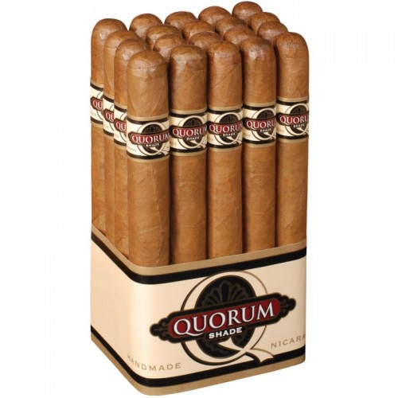

AJ Fernandez Bellas Artes Hybrid

При закупуване на кутия с 20 бр. пури, получавате
допълнително 2 бр. подарък.
За поръчки:0886138254
ЦЕНА:25лв. /1бр./
ОПИСАНИЕ
Тези пури дебютират през 2016 год. на IPCPR Convention & Trade Show
линията е емблематична с хибридният никарагуански обвиващ лист, който Фернандес нарече Rojita.
Кръстоска между семена Connecticut 8212, Corojo 99 и Havana 2000
Биндера (свързващият тютюн) е тъмен Havana 92 от региона Quilali в
Никарагуа, а пълнежа е микс тютюни е от Бразилия, Хондурас и Никарагуа.
Твърди се, че линията е вдъхновена от посещение на Абдел Фернандес в националния музей на
изкуството на Куба в Хавана, Museo Nacional de Bellas Artes de la Habana.
Средни към силни, перфектно балансирани с нотки на канела,
сладък кедър и портокалова кора.
CIGAR BAR & SHOPP